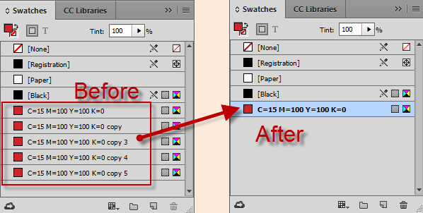

Swatch (Color)
Combine swatches with same value but different name
Function normalizeCMYK was written by Marc Autret. The source is here.

function normalizeCMYK(/*Document*/doc, swa,a,r,o,t,k,i)
// -------------------------------------
// Remove CMYK swatch duplicates and set every name in `C= M= Y= K=` form.
{
if( !doc ) return;
const __ = $.global.localize;
const CM_PROCESS = +ColorModel.PROCESS;
const CS_CMYK = +ColorSpace.CMYK;
swa = doc.swatches;
a = doc.colors.everyItem().properties;
r = {};
// Gather CMYK swatches => { CMYK_Key => {id, name}[] }
// ---
while( o=a.shift() )
{
if( o.model != CM_PROCESS ) continue;
if( o.space != CS_CMYK ) continue;
t = swa.itemByName(o.name);
if( !t.isValid ) continue;
for( i=(k=o.colorValue).length ; i-- ; k[i]=Math.round(k[i]) );
k = __("C=%1 M=%2 Y=%3 K=%4",k[0],k[1],k[2],k[3]);
(r[k]||(r[k]=[])).push({ id:t.id, name:t.name });
}
// Remove dups and normalize names.
// ---
for( k in r )
{
if( !r.hasOwnProperty(k) ) continue;
t = swa.itemByID((o=(a=r[k])[0]).id);
for( i=a.length ; --i ; swa.itemByID(a[i].id).remove(t) );
if( k == o.name ) continue; // No need to rename.
try{ t.name=k }catch(_){} // Prevent read-only errors.
}
};
normalizeCMYK(app.properties.activeDocument);
Convert Spot colors to Process
var myCols = app.activeDocument.colors;
for (i = 0; i < myCols.length; i++)
if (myCols[i].model == ColorModel.spot)
myCols[i].model = ColorModel.process;
Make color
var swatchRed = MakeColor("Red", ColorSpace.RGB, ColorModel.PROCESS, [255, 0, 0]);
var swatchGreen = MakeColor("Green", ColorSpace.RGB, ColorModel.PROCESS, [0, 255, 0]);
function MakeColor(colorName, colorSpace, colorModel, colorValue) {
var doc = app.activeDocument;
var color = doc.colors.item(colorName);
if (!color.isValid) {
color = doc.colors.add({name: colorName, space: colorSpace, model: colorModel, colorValue: colorValue});
}
return color;
}